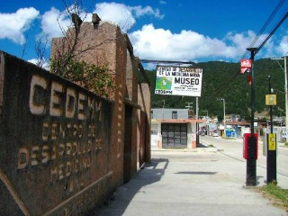
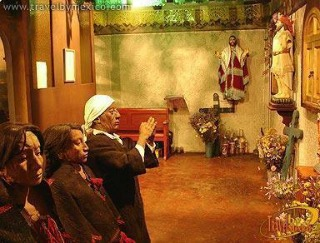
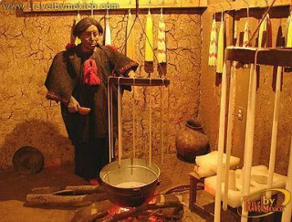
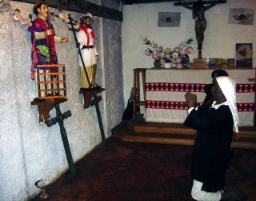
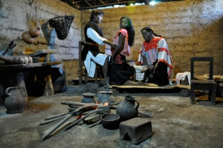

El Museo de Medicina Maya tiene como objetivo principal la difusión de las prácticas curativas tzotzil-tzeltal a nivel regional, nacional e internacional. A lo largo de sus seis espacios museográficos el visitante podrá observar la representación de las distintas técnicas y prácticas de la medicina tradicional maya de Chiapas.
Cuenta con un huerto demostrativo que contiene una extensa variedad de plantas medicinales y si se desea, se pueden consultar a los médicos tradicionales de este Centro quienes le pueden practicar una curación del cuerpo y del alma por medio de rezos, limpias y baños de temazcal.
Se encuentra ubicado en Salomón González Blanco, en el Barrio de Mexicanos.
Si usted se encuentra ubicado en la plaza de la paz viendo de frente hacia la catedral puede caminar hacia su izquierda pasando como referencia encontrará la Zapateria Catedral y Frente a este el Restaurant VIA VAI entre estos dos lugares encontrará el andador eclesiástico camine sobre el andador hasta llegar al final de este, usted se encontrará a la altura de la plazuela de Santo Domingo, continue caminando, derecho sobre la Avenida 20 de Noviembre 6 o 7 cuadras aproximadamente hasta llegar al Museo de la Medicina Maya.
En el lugar usted puede realizar actividades como:
* Fotografía
* Visita a Museos





posicione el mouse sobre las imágenes